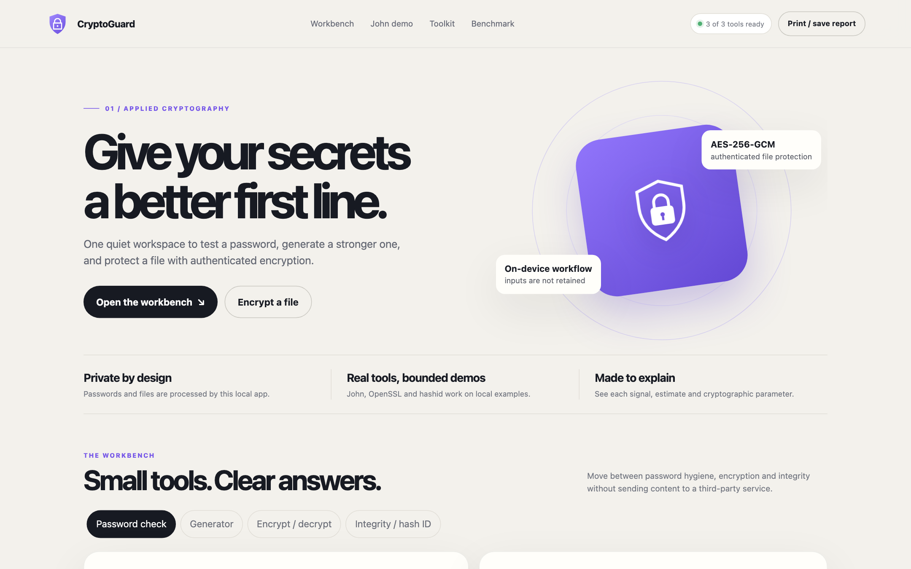
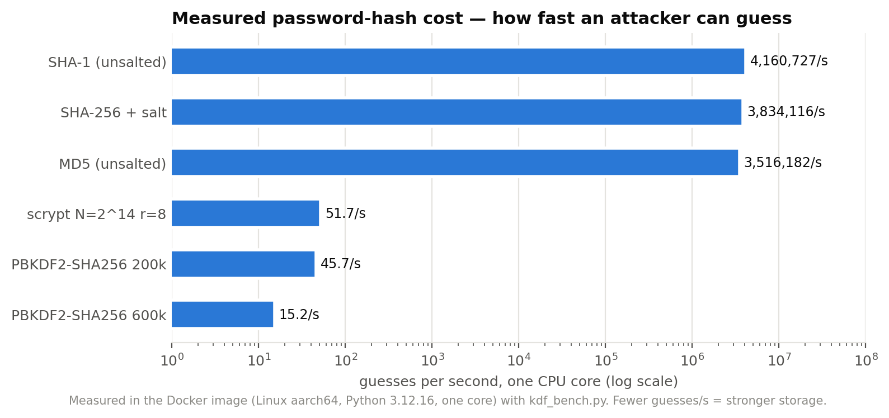
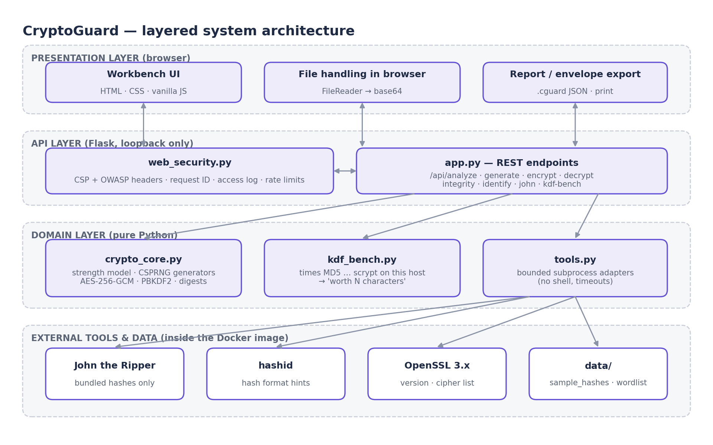
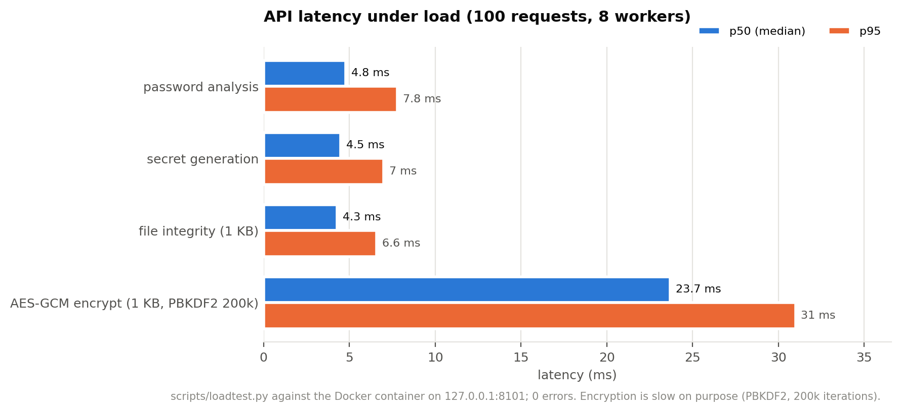

Explainable strength
Entropy, policy checks, weak patterns and crack-time scenarios with stated guess rates.
A local workbench for password analysis, secure generation, AES-256-GCM file encryption and a real John the Ripper demo, plus a benchmark that shows how much the server's hash choice changes an attacker's speed.

Meters print “centuries” without saying how many guesses per second they assume.
That speed depends far more on the server's storage scheme than on one extra character.
Time every scheme on the host and express the cost in password characters.
Everything runs locally; nothing typed or uploaded is stored or logged.
Entropy, policy checks, weak patterns and crack-time scenarios with stated guess rates.
Passwords and passphrases from the OS random source via Python's secrets.
PBKDF2-HMAC-SHA256 key derivation; tampering and wrong keys are rejected.
SHA-256 / SHA-1 / MD5 digests and hash-format identification with hashid.
Watch weak sample hashes fall, bounded to bundled data.
MD5 → PBKDF2 → scrypt timed on this machine, in character units.
One CPU core: 3.5 M MD5 guesses/s vs 15.2 PBKDF2-600k guesses/s. The 231,328× slowdown equals about 2.7 extra random characters, free for the user.


Benchmark inside the Docker image (Linux aarch64, Python 3.12.16, one core).
| Scheme | Guesses / s | Slowdown | Worth |
|---|---|---|---|
| MD5 (unsalted) | 3,516,182 | ≈ 1× | — |
| SHA-1 (unsalted) | 4,160,727 | ≈ 1× | — |
| SHA-256 + salt | 3,834,116 | ≈ 1× | — |
| PBKDF2-SHA256 200k | 45.7 | 76,940× | +2.47 chars |
| PBKDF2-SHA256 600k | 15.2 | 231,328× | +2.71 chars |
| scrypt N=2^14 r=8 | 51.7 | 68,011× | +2.44 chars |

Captured from the Docker build. Click to enlarge.
Requires Docker Desktop. Opens on loopback only.